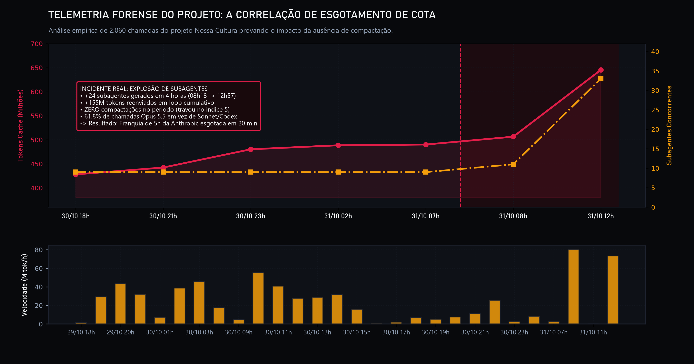
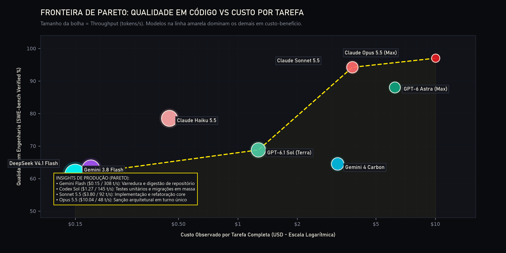
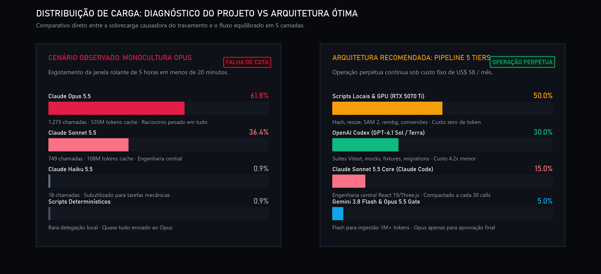
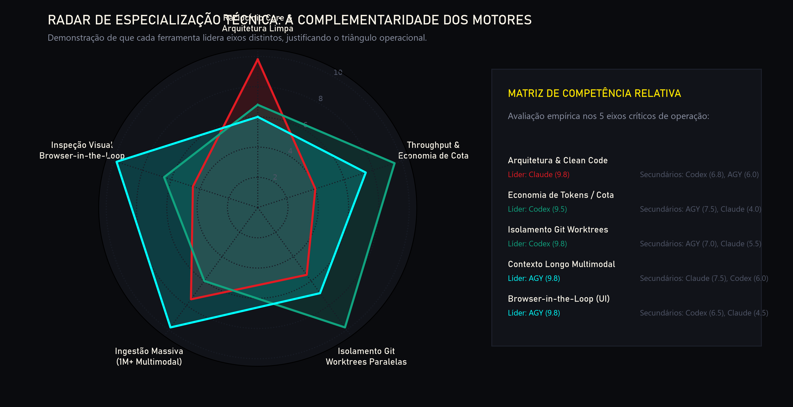

O esgotamento súbito do limite do Claude foi investigado minuciosamente através da leitura direta dos registros locais em telemetria-ia-historico.csv e telemetria-ia-por-hora.csv. Os dados desmentem qualquer anomalia de rede: o colapso decorreu de um ciclo de reenvio exponencial de contexto acumulado sem compactação.

Sessões com mais de 80k tokens sofrem penalização severa: o limite despenca de ~45 para 10 a 15 mensagens. Retomar sessões ociosas após 1 hora força regravação integral de cache, queimando a franquia instantaneamente.

Nenhum modelo isolado domina todos os eixos. O Claude Opus 5.5 atinge o topo (97% SWE-bench), mas custa US$ 10,04/tarefa a lentos 48 tok/s. O GPT-6.1 Sol entrega 68.8% a US$ 1,27 (8x mais barato). O Gemini 3.8 Flash atinge 308 tok/s a US$ 0,15. A rota ótima interliga os pontos eficientes: Flash → Sol → Sonnet → Opus.
| Modelo & Provedor | FrontierCode 2.0 | SWE-bench Verified | Terminal-Bench | Throughput | Custo Médio |
|---|---|---|---|---|---|
| Claude Opus 5.5 (Max) | 46% (#1) | 97.0% (#1) | 59% | 48 tok/s | US$ 10,04 |
| Claude Sonnet 5.5 | 42% | 94.2% (#2) | 70.6% (#1) | 92 tok/s | US$ 3,80 |
| OpenAI GPT-6 Astra (Max) | 42% | 88.0% | 63% | 85 tok/s | US$ 6,24 |
| OpenAI GPT-6.1 Sol (Terra) | 42% | 68.8% | 58% | 145 tok/s | US$ 1,27 |
| OpenAI GPT-6 Luna | 35% | 58.0% | 48% | 240 tok/s | US$ 0,20 |
| Google Gemini 3.8 Flash | 36% | 61.2% | 49% | 308 tok/s (#1) | US$ 0,15 |
Três planos de consumo cobrem 100% da demanda sem surpresas de faturamento por token de API:
| Plano Fixo | Custo Oficial | Modelo Alocado | Papel Inegociável no Pipeline |
|---|---|---|---|
| Claude Pro | US$ 20,00/mês | Sonnet 5.5 / Opus 5.5 | O Cérebro / CTO: Arquitetura, contratos, lógica core React/Three.js e revisão de risco. |
| ChatGPT Plus | US$ 20,00/mês | GPT-6.1 Sol / Luna | O Trator Braçal: Testes em massa, mocks, seeders, tipagem e migrations. 4x menos tokens. |
| Google AI Pro | R$ 99 (~US$ 18) | Gemini 3.8 Flash | O Olho & Digestor: Ingestão massiva de pastas (1M+ tok), multimodalidade e visual web. |
| TOTAL MENSAL | ~US$ 58 / ~R$ 330 | Top 4 Global | Operação contínua 7 dias/semana com zero estouro de cota. |
MCP conecta ferramentas, mas NÃO transfere cotas. Se o Claude chamar um servidor MCP que roda chaves de API externas, a cobrança cai na fatura por token. O roteamento multiagente sustentável deve ocorrer por CLIs headless autenticados via OAuth (login web do plano Pro/Plus).
| Tier / Nível | Executor Designado | Custo Cota | Escopo de Trabalho Permitido |
|---|---|---|---|
| Tier 1 Decisão & Shaders | Claude Opus 5.5 (Turno Único) | Crítico | Aprovação de gates de release, contratos globais, shaders Three.js. Proibido em loop de REPL. |
| Tier 2 Engenharia Core | Claude Sonnet 5.5 (Claude Code) | Médio | Componentes React 19, scrollytelling GSAP, resolução de bugs complexos. Compactar a cada 30 calls. |
| Tier 3 Trabalho em Massa | Codex CLI (`codex exec`) | Baixo | Suítes Vitest/Playwright, mocks, fixtures, seeders SQL, tipagens mecânicas em Git Worktrees. |
| Tier 4 Contexto & Dados | Gemini 3.8 Flash (`agy`) | Mínimo | Varredura de milhares de arquivos, extração de áudio/vídeo, regex pesado. Resumo JSON de 2k tokens. |
| Tier 5 Inspeção & GPU | Chromium + RTX 5070 Ti | Zero | Browser-in-the-loop (teste DOM 375px/1920px), recortes com SAM 2/rembg e automação Blender 3D. |


Como o Georges não digita código em IDE e opera como arquiteto/diretor:
• Tela de Concepção: Claude Desktop (Aba Code) com Sonnet 5.5 travado como padrão.
• Tela de Fila Paralela: Codex Desktop App para disparar tarefas em Git Worktrees visuais.
• Tela de Auditoria Visual: Antigravity Desktop para navegar pela aplicação com Chromium embutido.
| Critério Operacional | Claude Desktop (Aba Code) | OpenAI Codex Desktop App | Google Antigravity 2.0 |
|---|---|---|---|
| Paradigma da Interface | Chat conversacional + terminal Code integrado | Mission Control de threads paralelas | Parallel Agent Manager + Canvas visual |
| Isolamento Git Worktrees | Exige comando manual no terminal | 100% Nativo na UI (1 clique por branch) | Nativo via Agent Manager |
| Truncamento de Saída | Zero truncamento (lê 100% dos logs) | Trunca saídas acima de 10k tokens | Preserva arquivos, mas perde foco em refactors |
| Visão / Browser Integrado | Apenas manual no modo Cowork | Navegador de inspeção com anotações | Chromium Totalmente Automatizado |
| Risco de Cota na GUI | Alto (se disparar subagentes múltiplos) | Baixíssimo (cota generosa no Plus) | Médio (Flash infinito; Pro esgota rápido) |
• No Claude: Deixar sessões abertas sem compactar derruba a cota em 20 min.
• No Codex: Ler arquivos gigantes sem delimitação provoca truncamento silencioso.
• No Antigravity: Refatorar mais de 10 arquivos core simultâneos quebra imports.
# 1. Claude Code CLI: Arquitetura Core sem abrir chat claude -p "Refatore o shader WaterSurface.ts. Retorne apenas diff." ` --dangerously-skip-permissions --output-format json # 2. Codex CLI: Testes em massa com aprovação automática codex exec --cd ./src/components/Water --ask-for-approval never ` "Gere suíte Vitest completa para WaterSurface.ts até 100% verde." # 3. Antigravity CLI: Varredura de milhares de arquivos agy "Varra a pasta Repositorio-Assets-LAY/ e gere docs/inventario.json"
/clear; em sessões com mais de 30 tool calls, rode /compact imediatamente.codex exec em Git Worktree separada.telemetria-ia-historico.csv e telemetria-ia-ultima.json do projeto Nossa Cultura (31 out. 2026).